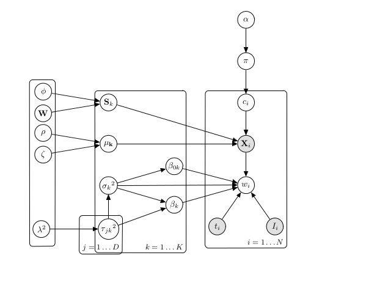

This is the website were I present the results of my master thesis.
The background of this project is the SBC, a model that infers clinically relevant cancer subtypes, by jointly clustering molecular data along with survival datain a semi-supervised manner. The original paper and the supplementary material are here. A graphical representation of the model is this:
include_graphics("../images/Graphical_model_SBC.png") 
SBC’s main features are:
Fully bayesian approach as omics data contains a lot of noise with p >> n.
Dirichlet Process prior to automatically infer the number of clusters.
Molecular Data modelled as a Hierarchical Multivariate Gaussian Distribution (Mixture model).
Survival time is modelled as Log-linear (Accelerated Failure Time) distribution with molecular covariates (Mixture model).
L-1 regularization for the covariates of the Survival Model (Bayesian Lasso).
Objectives
Perform an external validation of the SBC based clusters on the Verhaak study ensuring distinct survival curves for the predicted (as well as the training) clusters, using external datasets from patients diagnosed with Glioblastoma.
Characterise the obtained clusters and the corresponding signature looking at other data modalities for consistent patterns (e.g. Somatic Mutation Data, Copy Number, Pathway Enrichment, etc.)
Data preprocessing
DownloadTCGA.R is the code to download the TCGA-GBM Data from the TCGA Firehose Database (Using TCGAToolbox) and the GDC Data Portal (Using TCGABiolinks). It also contains the code to get the validated miRNA targets from a list of miRNA.
The python notebook Data_preparation-RTCGA.ipynb contains the preprocessing of the data(where I unify patient identifiers, verify the data is complete and in the right scale and check for the presence of the Verhaak signature and samples in our dataset), initial visualization and selection of training and testing sets*.
Preliminary results
This folder contains all the necessary scripts to train and run the model, and produce an R Notebook with the results.
The results for 13 different runs of the model are shown in this website. The variations between one or the other occur mainly in the feature selection and preprocessing steps.